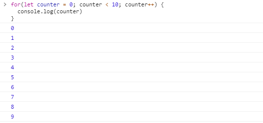
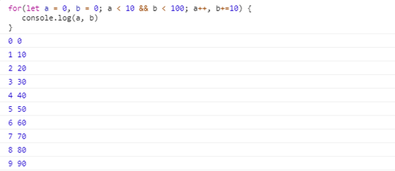
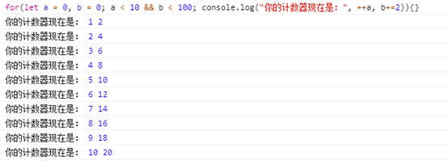
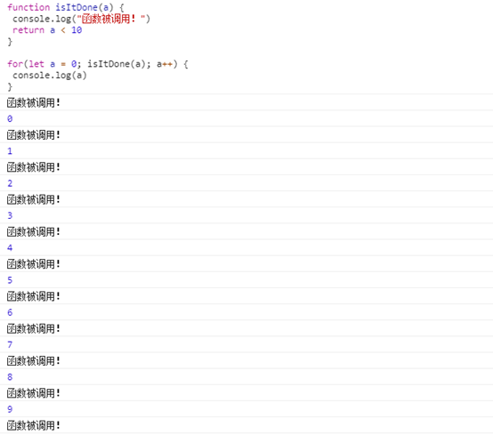
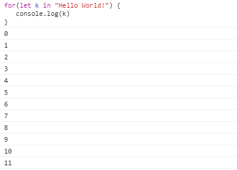
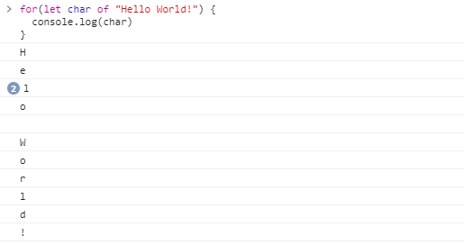
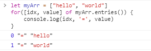
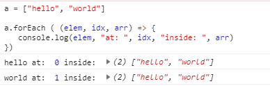

转载请注明出处：葡萄城官网，葡萄城为开发者提供专业的开发工具、解决方案和服务，赋能开发者。
原文出处：https://blog.bitsrc.io/3-flavors-of-the-for-loop-in-javascript-and-when-to-use-them-f0fb5501bdf3
在学习任何开发语言时候，for循环是必不可少的一种语法，可能所有开发人员都会使用它。它非常经典，以至于每个开发语言都至少包括一种关于循环的语法版本。不过，在JavaScript种包含了三种不同的循环语法（如果再讲究一点，也可以算作是四种）。
它们的使用方式并不完全相同，举例如下：
l 经典的For循环语法
l For….of 及 For…in
l 炫技一点的版本：.forEach
接下来，我想介绍下这三种语法使用时有什么异同，以及在什么时间怎样使用它们才能收获最棒的结果。好的，让我们开始吧。
这个语法我们应该都已经非常清楚了，在for循环中，你可以在其中定义内部计数器，设置相应中断条件和灵活的步进策略（通常可以是递增也可以是递减）。
语法为：
for([计数器定义];[中断条件];[步进策略]){
//...
TODO
}
我敢肯定即便不用我的介绍，之前你也一定写过类似的语句，例如：
for(let counter = 0; counter < 10; counter++) {
console.log(counter)
}
让我们在Chrome里运行一下，得到的结果也符合预期，但for循环就仅仅如此了吗？

你可以认为for循环为三个表达式
for(
[在循环开始时只执行一次的表达式];
[其中每一个逻辑判断都需吻合的表达式];
[循环每一步都被执行的表达式]
)
这样表述的意义在于，你可以使用多个计数器执行for循环，或在不影响计数器的情况下在步进表达式中执行每次需要执行的代码，举个例子：
for(let a = 0, b = 0; a < 10 && b < 100; a++, b+=10) {
console.log(a, b)
}
我们可以再进一步，让其变的更符合实际应用场景：
for(let a = 0, b = 0; a < 10 && b < 100; console.log("你的计数器现在是：", ++a, b+=2)){}
另外，你甚至可以把中间表达式替换为函数调用，只要你记住，该函数的返回值需要是一个布尔型或可以被转成布尔值的一个值即可，例如：
function isItDone(a) {
console.log("函数被调用！")
return a < 10
}
for(let a = 0; isItDone(a); a++) {
console.log(a)
}
那么，在经典的for循环中如何处理异步代码呢？如何保证不掉进异步陷阱里呢？
我为大家介绍一位新朋友：async / await，这将让我们在处理异步代码时变得更容易、可控，例如：
const fs = require("fs")
async function read(fname) {
return new Promise( (resolve, reject) => {
fs.readFile(fname, (err, content) => {
if(err) return reject(err)
resolve(content.toString())
})
})
}
(async () => {
let files = ['file1.json', 'file2.json']
for(let i = 0; i < files.length; i++) {
let fcontent = await read(files[i])
console.log(fcontent)
console.log("-------")
}
})()他们看起来非常相似，但它们并不是相同类型的循环。
让我们尽量简要的解释它们：
For…in 循环遍历对象的可枚举属性，也就是说当你的自定义对象被用作哈希表或字典时，使用For…in 遍历他们时将变得非常简单。
但请注意，遍历顺序是按元素顺序执行执行的，因此请不要依赖循环顺序。
let myMap {
uno: 1,
dos: 2,
tres: 3
}
for(let key in myMap) {
console.log(key, "=", myMap[key]);
}
看起来是很简单的，但请记住，For…in只能遍历一个实体对象，如果便利一个非实体，例如遍历一个string，那么将会发生如下情况：
for(let k in "Hello World!") {
console.log(k)
}
从结果可以看到，并没有遍历出每一个字母，而是遍历到了每个属性，正如您看到的，遍历出的数字并非是没有用的，因为"Hello World!"[1] 同样是可以返回相应的字母的。
相反，如果你想遍历每个字符，则需要使用其他变体：For…of
for(let char of "Hello World!") {
console.log(char)
}
这种循环方式看起来对string类型更有效，相同的用例，因为使用了这种语法，就能够返回元素中相应的值了。所以我们通过上述用例可知，For…of遍历的内容是对象的值。
通过上述的示例我们可知，他们相互一个遍历属性，一个遍历值，那么有没有什么方法可以既获得属性又获得值呢，答案是有的，使用entries方法，就可以同时获得属性和值，如下所示：
let myArr = ["hello", "world"]
for([idx, value] of myArr.entries()) {
console.log(idx, '=', value)
}
最后，在处理异步代码时是怎样的呢？答案当然是和for循环相同了。
const fs = require("fs")
async function read(fname) {
return new Promise( (resolve, reject) => {
fs.readFile(fname, (err, content) => {
if(err) return reject(err)
resolve(content.toString())
})
})
}
(async () => {
let files = ['file2.json', 'file2.json']
for(fname of files) {
let fcontent = await read(fname)
console.log(fcontent)
console.log("-------")
}
for(idx in files) {
let fcontent = await read(files[idx])
console.log(fcontent)
console.log("-------")
}
})()
最后我们再使用简短的方式来总结下For…in和For…of的区别
For…in——遍历属性
For…of——遍历值
这可能是我最喜欢的一个，这仅仅是因为我非常喜欢声明式语法或通过命令式编写代码的声明性方式。
而且，尽管上面的循环语法也很好用，并且都有很好的用例，但当我们需要关注数据本身时，forEach很好用。
不管怎样，先撇开哲学上的争论不谈，.foreach方法是for循环的另一个版本，但是这个方法是数组对象的一部分，它的目的是接收一个函数和一个额外的可选参数，以便在执行函数时重新定义该函数的上下文。
对于数组中的每个元素，我们的函数都将被执行，并且它将收到三个参数（是的，就是三个，而不是一个，因为您已经习惯了使用它）。它们分别是：
那么，让我们看一个简单的示例：
a = ["hello", "world"]
a.forEach ( (elem, idx, arr) => {
console.log(elem, "at: ", idx, "inside: ", arr)
})
更快更简单，不是吗？
但是你可以看到我们如何在函数中很容易地使用所有属性。下面是一个您希望在foreach方法上使用第二个可选参数的示例：
class Person {
constructor(name) {
this.name = name
}
}
function greet(person) {
console.log(this.greeting.replace("$", person.name))
}
let english = {
greeting: "Hello there, $"
}
let spanish = {
greeting: "Hola $, ¿cómo estás?"
}
let people = [new Person("Fernando"), new Person("Federico"), new Person("Felipe")]
people.forEach( greet, english)
people.forEach( greet, spanish)
通过重写被调用函数greet的上下文，我可以在不影响其代码的情况下更改其行为。
最后，显示此方法也可以与异步代码一起使用，下面是示例：
const fs = require("fs")
async function read(fname) {
return new Promise( (resolve, reject) => {
fs.readFile(fname, (err, content) => {
if(err) return reject(err)
resolve(content.toString())
})
})
}
let files = ['file1.json', 'file2.json']
files.forEach( async fname => {
let fcontent = await read(fname)
console.log(fcontent)
console.log("-------")
})
这就是我想要分享的关于JavaScript中关于循环的全部内容，我希望现在您对它们有了更清晰的理解，并且可以根据这些知识和我们当前的实际需求来选择您喜欢的循环。